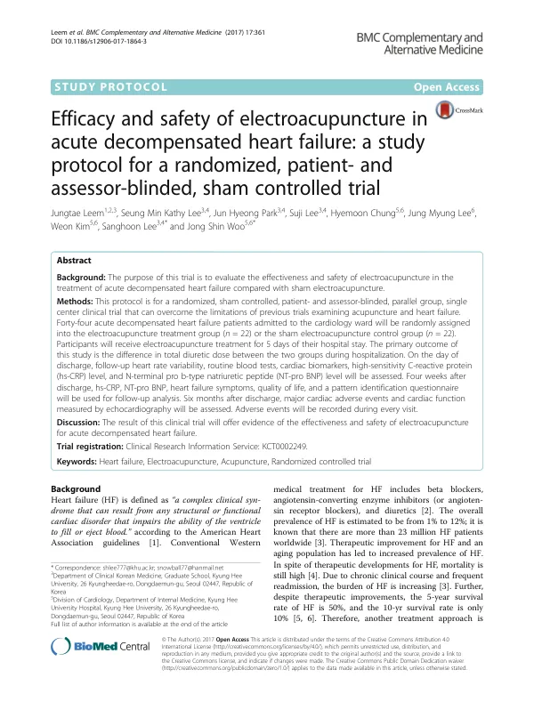

Efficacy and safety of electroacupuncture in acute decompensated heart failure: a study protocol for a randomized, patient- and assessor-blinded, sham controlled trial
Leem J, Lee SMK, Park JH, Lee S, Chung H, Lee JM, Kim W, Lee S, Woo JS
BMC Complementary and Alternative Medicine 17(1):361

첫 장 · 오픈액세스First page · open access
논문 소개Summary
심부전은 치료가 나아졌는데도 5년 생존율이 50%, 10년 생존율이 10%에 머무는 병입니다. 만성 경과와 잦은 재입원이 부담을 키웁니다. 심부전의 중요한 병태생리 하나가 자율신경 불균형이고, 심박변이도가 그 상태를 비추며 환자의 예후를 예측합니다. 침이 자율신경 긴장도를 바꾼다는 것은 이미 알려져 있었지만, 심부전 침 치료를 모은 체계적 문헌고찰은 기존 연구의 방법론적 질이 낮다고 결론지었습니다.
이 논문은 그 고찰이 남긴 숙제를 그대로 설계에 옮긴 임상시험 프로토콜입니다. 경희의료원 심장내과 병동에 입원한 급성 비대상성 심부전 환자 44명을 전침군과 샴 전침군에 22명씩 무작위로 나눕니다. 대상은 40세 이상으로 심인성 폐부종에 따른 호흡곤란이 있고 이뇨제가 필요하며 수축기혈압이 95밀리미터수은주를 넘고 B형 나트륨이뇨펩타이드가 150피코그램퍼밀리리터를 넘는 분들입니다. 입원 5일 동안 하루 한 번, 양측 내관·극문·족삼리·상거허와 태계·삼음교에 2헤르츠 전침을 20분 놓습니다.
일차 평가변수를 입원 기간의 누적 이뇨제 총량으로 잡은 것이 이 설계의 핵심입니다. 침은 심부전에서 보조 치료이므로 증상을 얼마나 없앴는가보다, 과도하면 전해질 이상을 일으켜 심혈관 사건 위험을 높이는 이뇨제를 얼마나 덜 쓰게 했는가가 임상적으로 뜻이 있다고 보았습니다. 이차로 뉴욕심장협회 기능분류와 삶의 질, 변증 설문, 심장표지자와 NT-proBNP, 고민감도 C반응단백, 심기능, 심박변이도, 주요심장사건을 봅니다. 퇴원 뒤 7일과 28일, 180일에 방문하게 해 장기 효과까지 따라갑니다.
프로토콜 논문이므로 결과는 없습니다. 대신 침 임상시험이 늘 걸려 넘어지는 자리를 미리 막아 두었습니다. 대조군에는 피부를 뚫지 못하는 파크 샴 기기를 쓰고 심장과 무관한 혈위를 골랐으며 전기자극기를 연결하되 전류를 흘리지 않습니다. 샴침의 효과크기가 위약약물보다 커서 많은 침 시험이 실패한다는 사정을 저자들이 명시하고, 대조군의 기대 효과를 낮추려 한 것입니다. 눈가림이 지켜졌는지도 1일과 5일에 눈가림 지수와 신뢰도 검사, 침 기대척도로 직접 확인합니다.
표본 수는 선행 급성 심부전 시험에서 보고된 입원 중 누적 푸로세미드 용량 223밀리그램과 256밀리그램을 두 군의 가정값으로 삼아 군당 17명을 얻고, 탈락 20%를 더해 22명씩 44명으로 정했습니다.
Heart failure still carries a five-year survival of 50% and a ten-year survival of 10% despite therapeutic advances, and its chronic course and frequent readmissions compound the burden. One important element of its pathophysiology is autonomic imbalance; heart rate variability reflects that state and predicts prognosis. Acupuncture is known to alter autonomic tone, but a systematic review of acupuncture for heart failure concluded that the methodological quality of existing trials was low.
This paper is the protocol for a trial that translates the review's unfinished business directly into design. Forty-four patients admitted with acute decompensated heart failure to the cardiology ward of Kyung Hee Medical Center will be randomised, 22 each, to electroacupuncture or sham electroacupuncture. Eligible patients are over 40, present with dyspnoea from cardiogenic pulmonary oedema requiring diuretics, have systolic blood pressure above 95 mmHg and B-type natriuretic peptide above 150 pg/mL. For five days of the admission they receive 20 minutes of 2 Hz electroacupuncture once daily at bilateral PC5, PC6, ST36, ST37, KI3 and SP6.
The design turns on its primary outcome: cumulative diuretic dose over the hospital stay. Since acupuncture is adjunctive in heart failure, the authors judged that what matters clinically is not how far symptoms fall but how far the treatment reduces diuretics, which in excess cause electrolyte disturbance and raise cardiovascular risk. Secondary outcomes include the New York Heart Association functional class, quality of life, a pattern identification questionnaire, cardiac biomarkers and NT-proBNP, high-sensitivity C-reactive protein, cardiac function, heart rate variability and major adverse cardiac events. Visits at 7, 28 and 180 days after discharge extend the follow-up to long-term effects.
Being a protocol, it reports no results. What it does instead is close off the places where acupuncture trials habitually founder. The control group receives the Park sham device, which cannot penetrate the skin, at points unrelated to cardiac disease, connected to a stimulator that delivers no current. The authors state plainly that sham acupuncture has a larger effect size than placebo medication and that many acupuncture trials fail for this reason; the design deliberately lowers the control group's expected response. Whether blinding held is itself checked on days 1 and 5 using a blinding index, a credibility test and an acupuncture expectancy scale.
The sample size derives from cumulative furosemide doses of 223 mg and 256 mg reported in a previous acute heart failure trial, taken as the two group assumptions, giving 17 per group; adding a 20% dropout allowance yields 22 per group, 44 in total.
인용Cite
Leem J, Lee SMK, Park JH, Lee S, Chung H, Lee JM, Kim W, Lee S, Woo JS. Efficacy and safety of electroacupuncture in acute decompensated heart failure: a study protocol for a randomized, patient- and assessor-blinded, sham controlled trial. BMC Complementary and Alternative Medicine. 2017;17(1):361. doi:10.1186/s12906-017-1864-3